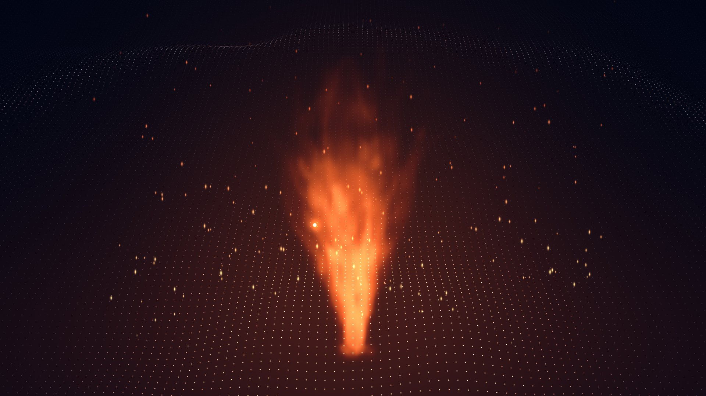
MOODBOARD · 2026.11 중간 발표
불씨
지금 사이트에서 고른
장면 · 색 · 글꼴 · 조형
김시언 포트폴리오 · happybluebird.github.io/bulssi-portfolio/?motion=on
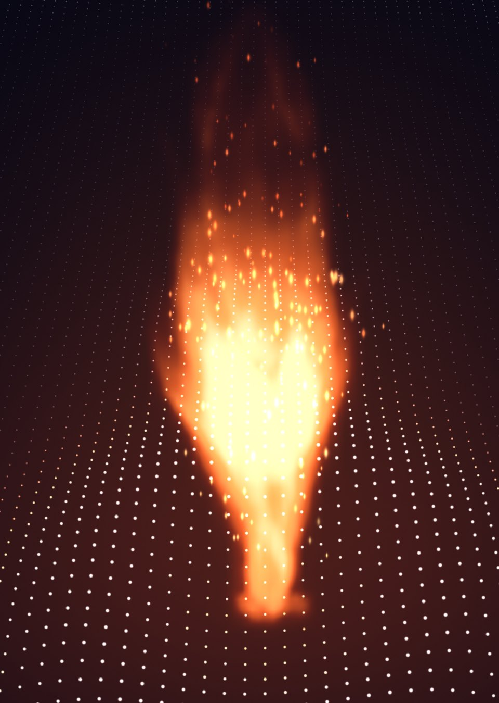
KEYWORD
불씨
형체만 남은 빛 · 숨 쉬는 점 · 번지는 온기
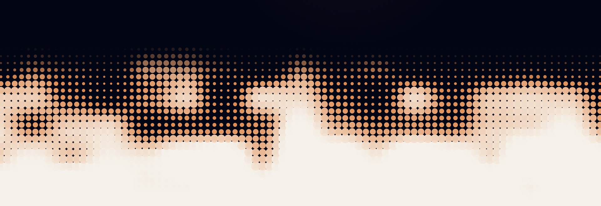
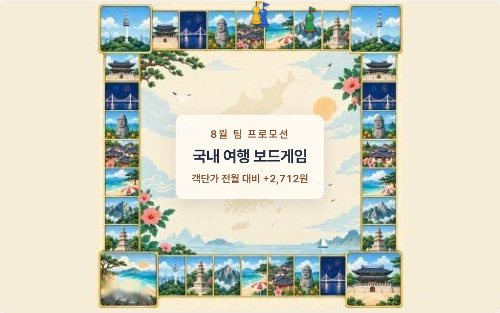
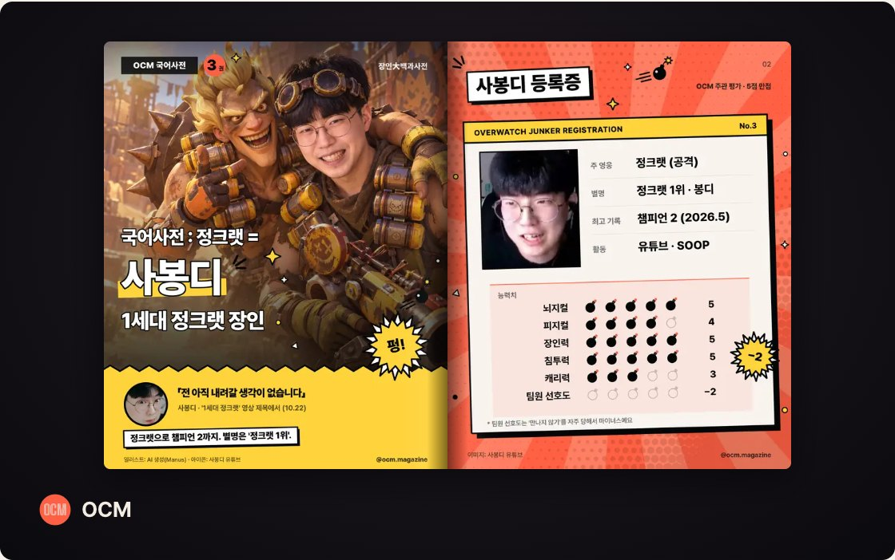
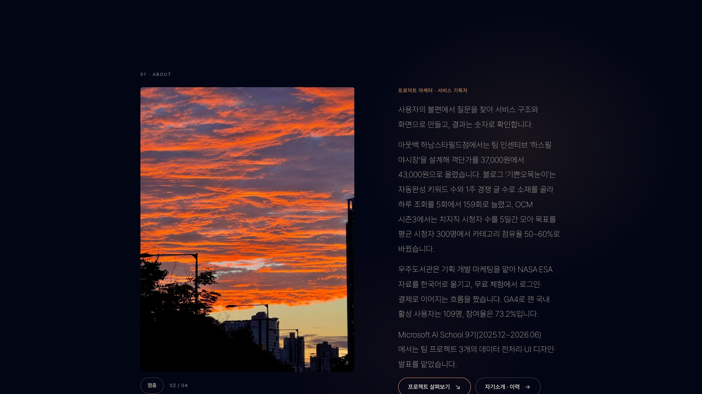
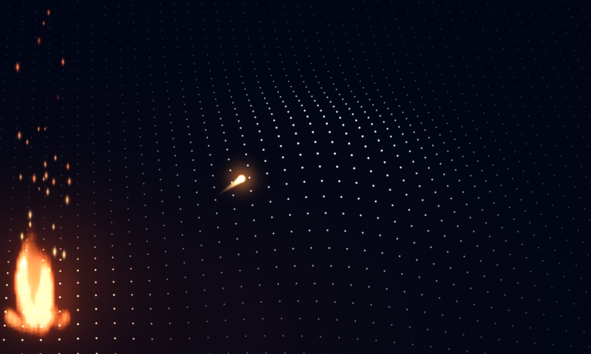
Pretendard
프로덕트 마케터 · 서비스 기획자
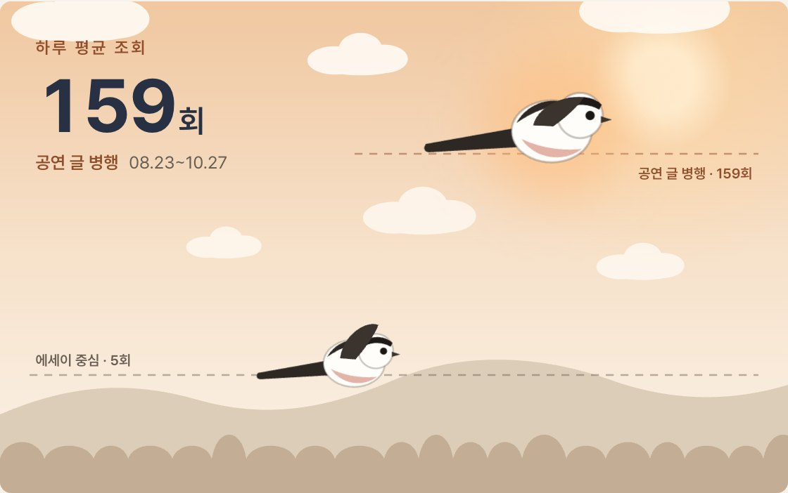
01 · DIRECTION
불씨가 점에 온기를 옮겨, 크림빛 기록이 된다
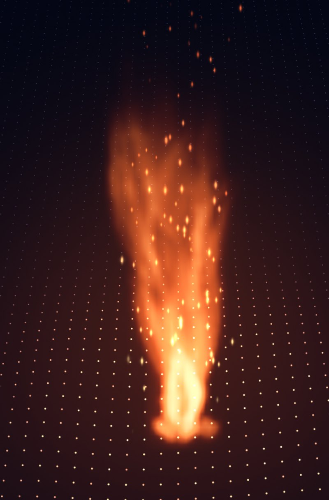
형체만 남은 불씨
윤곽 없는 빛 덩어리. 끌어 돌리고 누를 수 있는 3D가 표지의 주인공
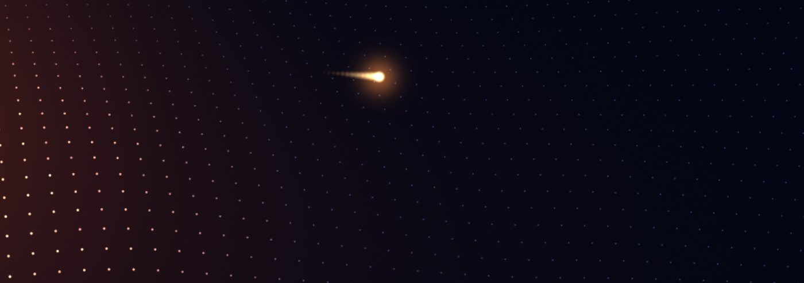
글 대신 장면
표지 문구는 화면에 쓰지 않고, 호기심 불티가 날아가 닿는 물결로 전함
뒤집히지 않는 밝기
자기소개까지 남색을 잇고, 점이 데워지며 크림 목차로 넘어감
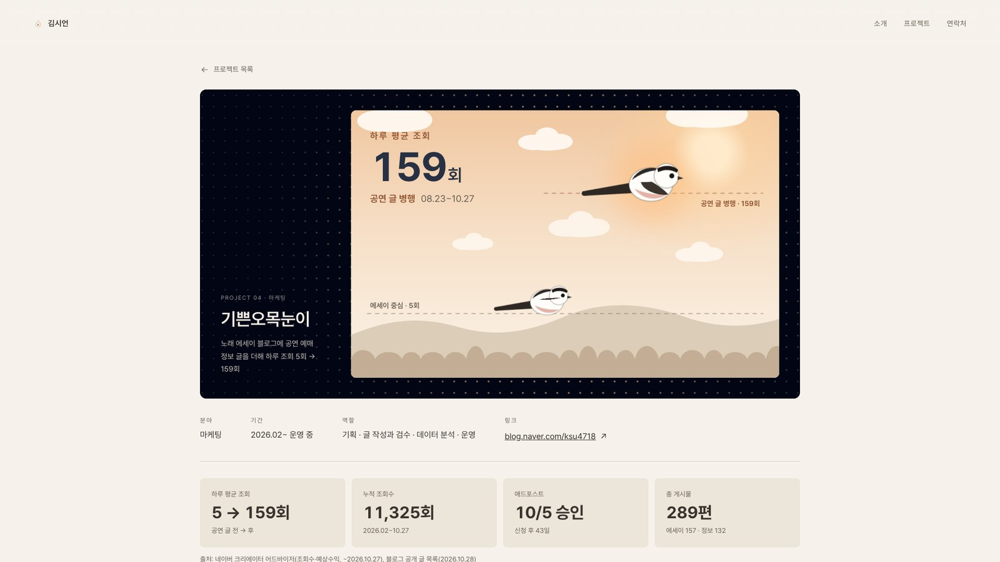
읽는 곳은 차분하게
목차와 상세는 크림 바탕과 고딕. 상세는 장면 8 : 글 2
02 · COLOR
남색 밤에서 크림빛 기록으로
스크롤 순서와 길이 · 1920×1080 화면에서 잰 첫 페이지 높이
표지 · 자기소개 54%
새벽 8%
목차 · 연락처 38%
어두운 장면 · 표지와 자기소개
밤
#010514
식은 점
#272E42
불씨 빛
#9E1A05→#FFDEA8
온기
#F09658
강조
#E9A066
밝은 장면 · 목차와 상세
크림
#F6F2EB
토프
#D4C7B7
코퍼
#B96D43
짙은 코퍼
#8F4E2C
글자
#38332E
보조 글자
#675D53
색 값은 사이트 코드(공통 색 · 표지 셰이더 · 새벽 띠)에서 그대로 옮김 · 순수 검정·흰색은 쓰지 않음
03 · TYPE
Pretendard 하나, 굵기로 나누는 위계
상세 제목
600 · 최대 88px
기쁜오목눈이
섹션 제목
500 · 32px
프로젝트
소개 글
300 · 17–22px
결과는 숫자로 확인합니다.
수치
700 · 최대 32px
5 → 159회 · +16%
라벨
12px · 자간 0.22em
PLANNING / MARKETING / CONTENT
원칙
- 고딕만 쓰고, 명조·세리프는 쓰지 않음
- 소개 글은 가는 300으로 길게 읽히게
- 제목은 500~600, 자간을 조금 좁게
- 라벨은 작게, 자간은 넓게
- 줄 바꿈은 단어 단위
사이트 서체 Pretendard (SIL OFL 1.1) · 이 보드도 같은 서체로 표시 · 왼쪽 숫자는 사이트의 실제 크기
04 · ELEMENTS
점과 빛으로만 만든 표지
3D 불씨
형체만 남은 빛 · 끌어 돌리고 누름
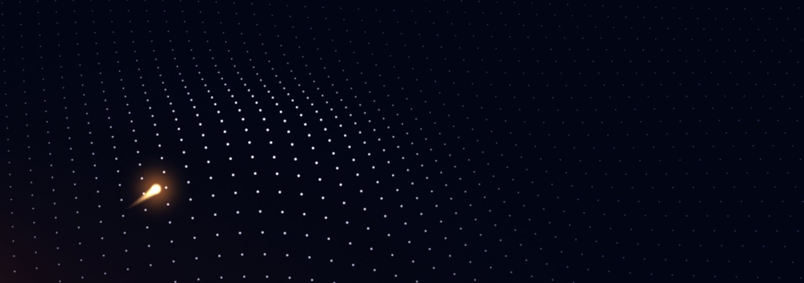
점 배경
숨 쉬는 3D 점 · 포인터 근처가 솟음
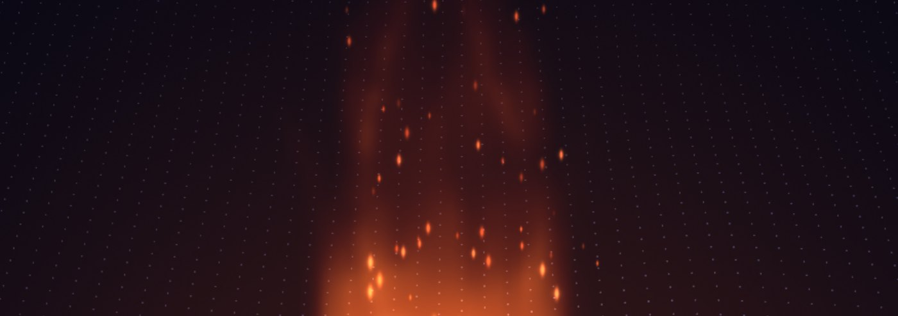
불티
장면이 커질수록 많이, 높이 · 누르면 튐
호기심 불티
누른 곳으로 날아가 닿으면 물결이 퍼짐
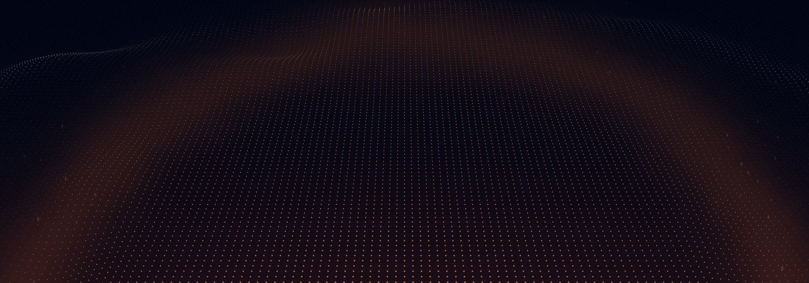
온기
불씨의 온기가 점에서 점으로 번짐
3D 불씨는 GLB 모델을 흐려 빛만 남김 · 점과 불티는 GL_POINTS · 느린 기기는 품질을 자동으로 낮춤
05 · COVERS
프로젝트마다 움직이는 소표지
판
아웃백 홀 매니저
보드게임 판 위를 팀 말 4개가 돎
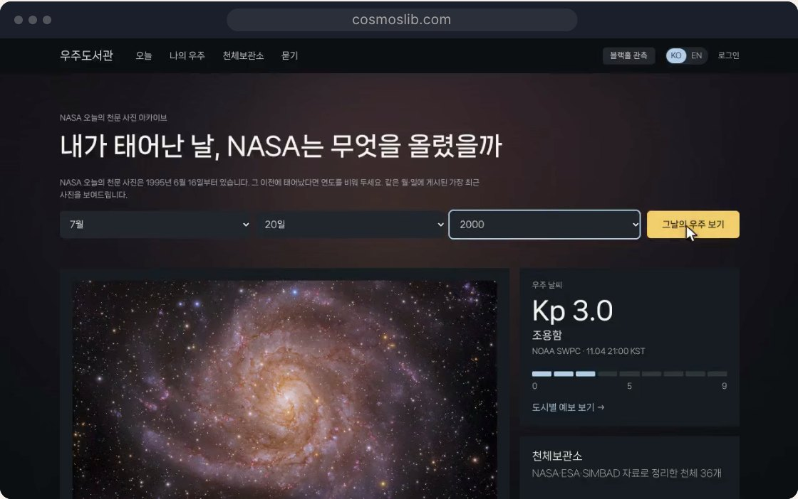
시연 영상
우주도서관
실제 사이트를 녹화해 바로 재생
책
OCM
게시한 카드뉴스를 엮은 책이 넘어감
비행
기쁜오목눈이
5회의 새 위로 159회의 새가 날아듦
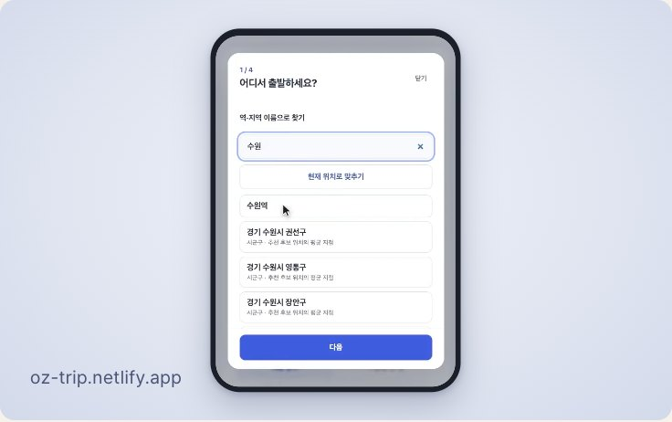
휴대폰 틀
OZ TRIP
휴대폰 화면 안에서 도는 시연
시연 영상 · 서비스 기획과 UI/UX
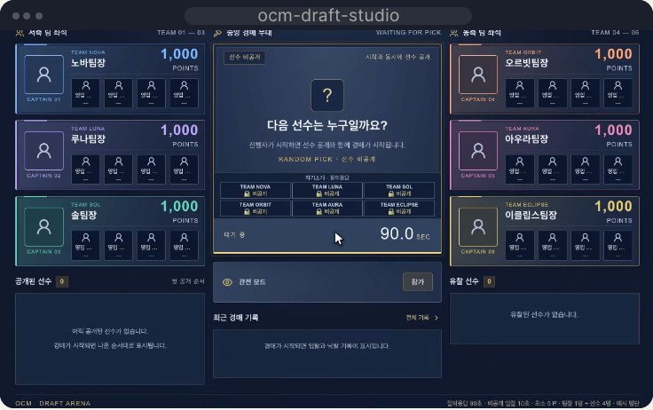
경매 드래프트 시스템
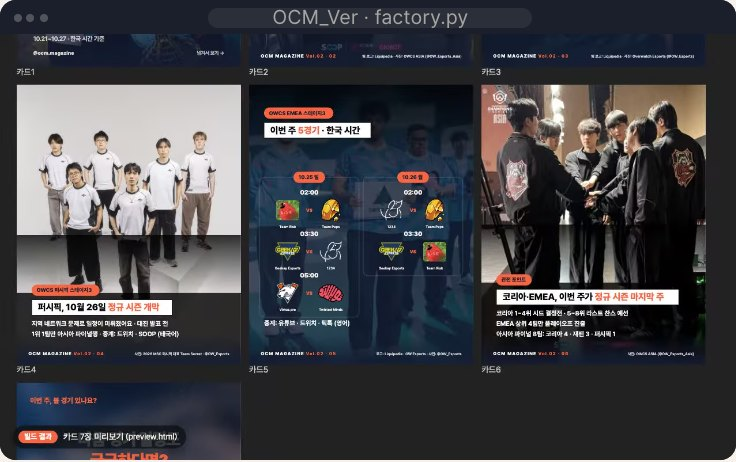
카드뉴스 자동화
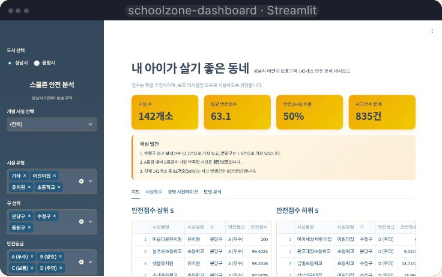
스쿨존윅
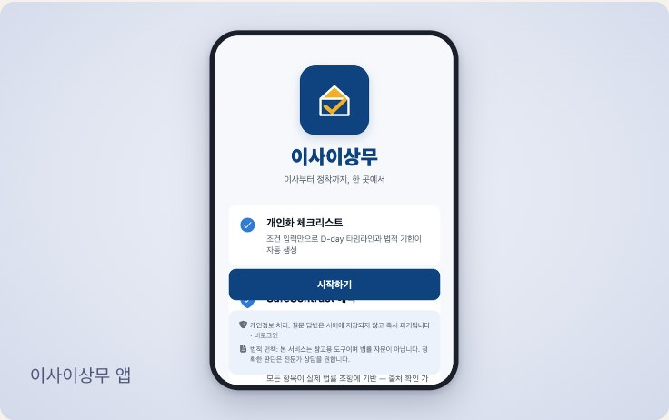
이사이상무
기억의 궁전
카드에 마우스를 올리거나 키보드로 고르면 움직임 · 터치 기기는 화면에 들어올 때 한 번
06 · FLOW
표지에서 목차까지 한 번에 이어지는 장면
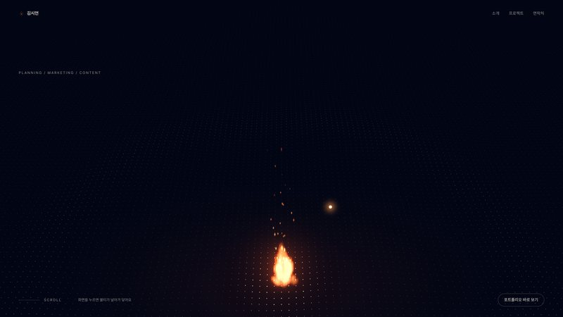
01 작은 불씨
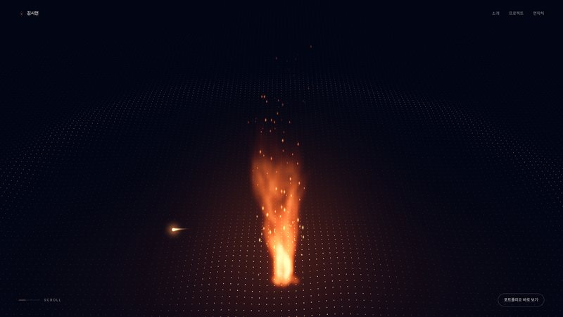
02 커지는 불
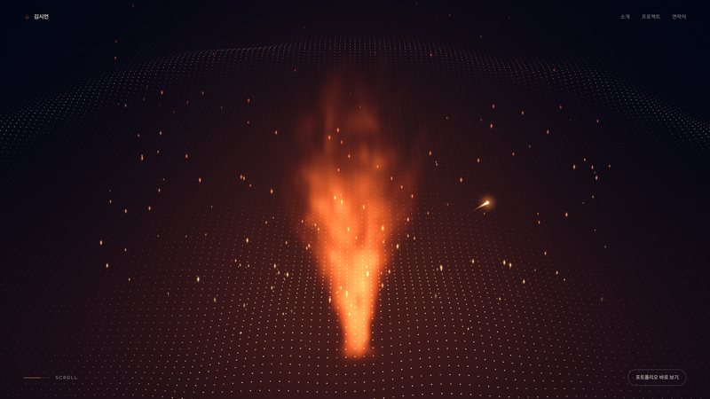
03 번지는 불
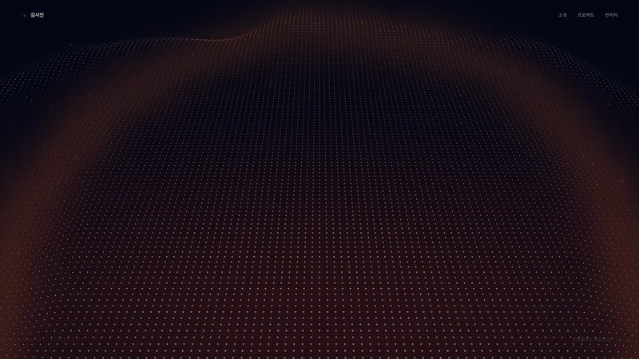
04 온기가 점으로
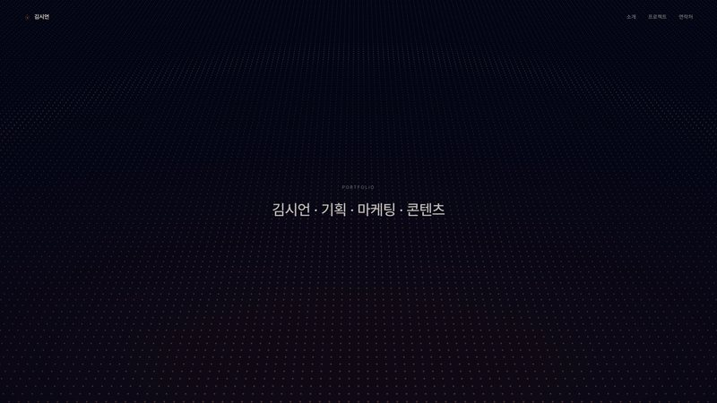
05 남색으로 가라앉음
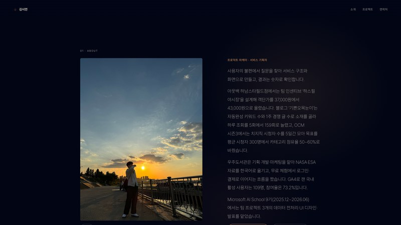
06 자기소개
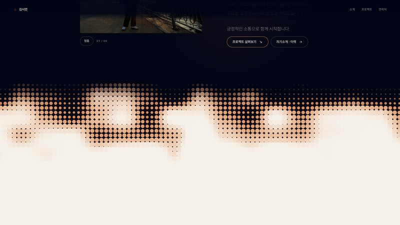
07 점이 데워져 크림으로
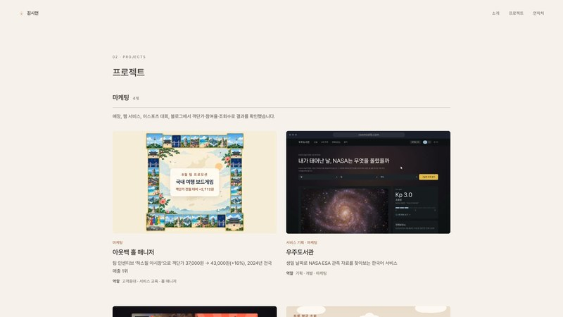
08 프로젝트 목차
끌어 돌리기 · 누르면 불티가 튐 · 배경을 누르면 호기심 불티가 날아가 물결 · ‘포트폴리오 바로 보기’로 건너뛰기
07 · CHANGES
10.17 보드에서 지금 사이트로
| 항목 | 10.17 보드 | 지금 사이트 | 바꾼 이유 |
|---|---|---|---|
| 표지 배경 | 실제 불 사진 | 직접 만든 3D 점 배경 | 3D 인터랙티브를 메인으로 |
| 3D 불씨 | 부분별로 피어나는 불꽃 | 윤곽 없이 형체만 남은 빛 | 형태가 잡히지 않은 자연스러운 불 |
| 표지 문구 | 화면에 큰 문구 | 호기심의 물결로 전하고, 문구는 화면 낭독용 | 글보다 장면이 더 와닿게 |
| 밝아지는 전환 | 종이가 타들어 가며 열림 | 온기가 점을 밝힘 (자기소개 → 목차) | 타는 이미지는 부정적 연상 |
| 표지 다음 | 바로 아이보리 | 자기소개까지 남색 | 밝기가 갑자기 뒤집히지 않게 |
| 소표지 | 마른 가지 상징 | 움직이는 장면 10개 | 프로젝트를 직접 보여 주기 |
10.17 비주얼 컨셉 보드는 그대로 두고, 무드보드만 지금 사이트 기준으로 새로 정리